2 자료의 기술
- 수집한 자료를 정리하여 표나 그림으로 나타내면 자료가 가진 개략적인 분포의 특성을 쉽게 파악할 수 있음
- 수집한 자료를 정리, 표현, 요약, 해석할 수 있는 기본적인 통계량을 기술통계량(descriptive statistic)이라 함
- 일반적으로 자료를 일일이 열거하기보다는 몇 가지 수식적인 통계량으로 자료를 요약해 나타내는 것이 더 효과적
- 특히 둘 이상의 집단의 자료가 있을 때 각 집단의 특성을 적절한 기술통계량으로 요약하여 설명하면 여러 집단을 비교하기 쉬움
2.1 자료의 종류
2.1.1 범주형 자료
- 숫자로 표현될 수 없는 자료를 집단화하여 나타낸 자료를 범주형 자료 (categorical data) 또는 질적 자료(qualitative data)라 하고 명목형 자료 (nominal data)와 순서형 자료(ordinal data)로 구분함
- 명목형 자료
- 분류만 하여 값을 부여한 자료
- 분석의 편의상 숫자로 값을 부여 - 예를 들어 성별 자료에서 남자는 1, 여자는 0 으로 부여하여 구분
- 예) 종교, 혈액형 등
- 순서형 자료
- 범주형 자료로 생성된 값이 순위(order)의 개념을 갖는 자료
- 예) 대, 중, 소 등으로 순서 관계를 나타내는 자료, 평점, 선호도, 학점, 학력 등
2.1.2 측정형 자료
- 각 관측 대상이 되는 자료에 측정 단위를 이용한 측정값이 부여되고 숫자의 크기가 의미를 갖는 자료를 측정형 자료(measurement data) 또는 양적 자료 (quantitative data)라 함. 자료 자체가 수를 나타내어 수치적 자료(numerical data)라고도 함
- 측정형 자료는 0 또는 양의 정수를 가지는 셀수있는(countable) 이산형 자료 (descrete data)와 기준 및 단위에 의해 실수로 측정되는 연속형 자료 (continuous data)로 구분
- 이산형 자료
- 소수점 이하로는 사용이 불가능
- 0을 포함한 양의 정수로 표현 되는 자료
- 예) 가족 구성원 수, 가구의 자동자 보유 대수 등
- 연속형 자료
- 일정구간 안에 있는 숫자로 측정되고 연속성을 띄며 무한개의 값을 가질 수 있는 자료
- 실수상에서 임의의 값을 가짐
- 예) 키, 몸무게, 혈압, 월급, 온도 등
2.2 위치의 측도
- 자료를 도수분포표(frequency table)나 히스토그램(histogram)과 같은 도표를 이용하여 정리하면 자료들이 어느 위치에 가장 많이 모여 있는지 또는 전체적으로 어떠한 형태로 분포가 이루어져 있는지를 한 눈에 알아 볼 수 있음
- 관찰된 자료들이 어느 위치에 집중되어 있는가를 나타내주는 측도를 위치 (location) 측도라 하며 이를 자료의 대표값이라고 함.
- 위치 측도에는 평균, 중앙값, 최빈값, 사분위수, 백분위수 등이 있음
2.2.1 평균
- 흔히 산술평균으로 알려진 평균(mean)은 자료 전체를 합한 값을 합한 자료의 수로 나누어 구함
- 평균을 구하는 과정은 주어진 자료가 모집단이나 표본이나 같지만 모집단의 평균은 그리스 문자 \(\mu\)로 나타내며 표본의 평균은 \(\bar{x}\)로 표현함
분포에 있어서 평균은 자료의 합을 자료의 전체 개수로 나눈 것이다. 이것은 관찰값이 모두 동일한 가중값(1/자료개수)을 가진다는 의미이다.
- N개로 구성된 모집단의 첫 번째 관찰값을 \(x_1\)이라 하고, 두 번째를 \(x_2, \ldots, N\) 번째를 \(x_N\)이라 할 때 모집단의 평균인 모평균(\(\mu\); population mean)을 구하는 공식은 다음과 같음
\[ \mu=\frac{x_1+\cdots+x_N}{N}=\frac{1}{N}\sum_{i=1}^N x_i, \,\,\, N: 모집단의 크기 \]
- \(N\)개로 구성된 모집단에서 \(n\)개의 표본을 뽑았을 때 표본의 첫 번째 관찰값을 \(x_1\) 이라 하고, 두 번째를 \(x_2, \ldots, n\)번째를 \(x_n\)이라 할 때 표본의 평균인 표본평균(\(\bar{x}\) ; sample mean)을 구하는 공식은 다음과 같음
\[ \bar{x}=\frac{x_1+\cdots+x_N}{n}=\frac{1}{n}\sum_{i=1}^N x_i, \,\,\, n: 모집단의 크기 \]
2.2.2 중앙값
중앙값(median)이란 자료를 크기의 순서로 나열해 놓았을 때 위치적으로 중앙에 있는 값을 의미
자료의 개수를 \(n\)이라 할 때 크기 순서대로 나열된 관찰값을 순서통계량(order statistic)이라 하며, \(x_{(1)}, x_{(2)}, \ldots, x_{(n)}\)으로 표기
- 여기서 \(x_{(1)}\)은 자료의 최소값(minimum value)이고, \(x_{(n)}\)은 자료의 최대값(maximum value)을 의미
\(x_{(1)}, x_{(2)}, \ldots, x_{(n)}\)이라 하면, \[\text{표본중앙값 : } \tilde{x}= \begin{cases} x_{((n+1)/2)}, \hskip5pt n\text{이 홀수일 경우} \\ \\ \frac{x_{(n/2)}+x_{(n/2+1)}}{2}, \hskip5pt n\text{이 짝수일 경우} \end{cases}\]
\(n\)이 홀수일 때 - 관찰값의 개수가 홀수일 때는 크기 순서대로 나열했을 때, 바로 중앙에 있는 값이 중앙값이 됨
예) 3, 5, 8, 10, 11 : 중앙값 = 8
\(n\)이 짝수일 때 - 관찰값의 개수가 짝수일 때는 크기 순서대로 나열하여 중앙에 있는 두 개의 관찰값의 평균이 중앙값이 됨
예) 3, 3, 4, 5, 7, 8 : 중앙값 = 4.5
자료를 수직선상에 표시할 때, 다른 관찰값과 동떨어져 있는 관찰값을 특이값(outlier)이라고 하고 특이값에 따라 크게 달라지지 않는 통계량을
"로버스트(robust)하다"라고 함중앙값은 로버스트하며 평균은 특이값에 민감하게 변화하는 특징이 있음. 즉, 평균은 로버스트 하지 않음
2.2.3 최빈값
- 발생 빈도(frequency)에 대한 대표값으로 가장 빈도가 높은 관찰값을 최빈값(mode)이라 하며, 도수분포표에서 빈도가 제일 큰 계급(class)을 최빈계급이라고 함
자료 중에서 발생하는 도수가 가장 많은 값을 최빈값이라 한다.
최빈값은 쉽게 구할 수 있는 장점이 있으나 대표값으로는 부적절
모든 관측값들의 도수가 같다면 최빈값이 존재하지 않고, 가장 큰 도수를 가지는 값이 여러 개 있을 경우에는 최빈값이 여러개로 나타남
2.2.4 평균, 중앙값, 최빈값 비교
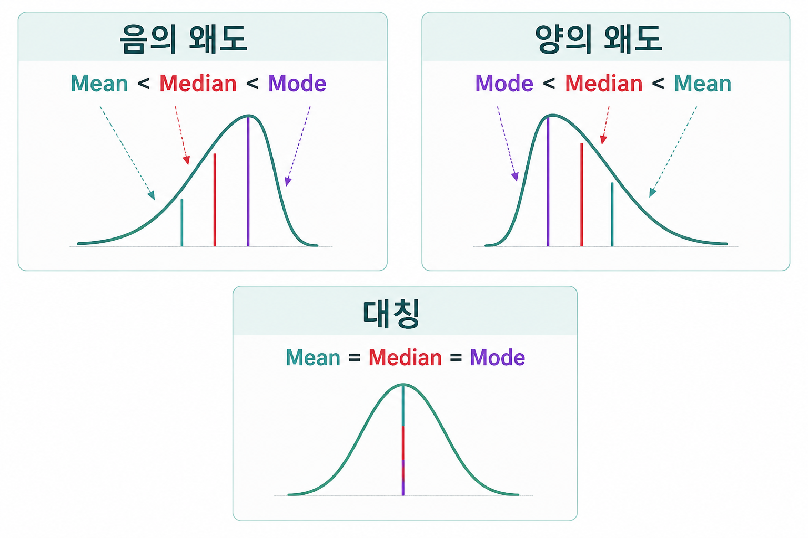
2.2.5 백분위수
크기순으로 배열한 자료를 100등분하는 수를 백분위수(percentile)라고 하며, 제 100\(p\)백분위수(\(0 \le p \le 1\))란 자료를 크기순으로 배열하였을 때 100\(p \%\)의 관찰값이 그 값보다 작거나 같고 100(\(1-p\))\(\%\)의 관찰값이 그 값보다 크거나 같게 되는 값이다.
중앙값은 \(50\%\)의 관찰값이 그 값보다 작거나 같고 \(50\%\)의 관찰값이 그 값보다 크거나 같으므로 제 \(50\)백분위수임
제 \(100p\) 백분위수
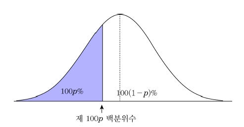
2.2.6 사분위수
자료의 관찰값을 작은 값부터 크기순으로 배열했을 때 전체 관찰값을 4등분하는 위치의 값을 사분위수(quartile)라고 함
값을 쉽게 구할 수 있다는 장점이 있으나 대표값으로는 부적절
\(Q_1\)을 제1사분위수(first quartile; 25th percentile) 또는 하사분위수(lower quartile), \(Q_2\)를 제2사분위수(second quartile; 50th percentile) 또는 중앙값, \(Q_3\)를 제3사분위수(third quartile; 75th percentile) 또는 상사분위수(upper quartile)라 함
사분위수(또는 백분위수) 계산 방법
관찰값을 작은 순서로 배열한다.
관찰값의 개수(\(n\))에 \(p, \hskip5pt 0\le p \le 1\)를 곱한다.
만약 \(n\times p\)가 정수이면, \(n\times p\)번째로 작은 관찰값과 \(n\times p+1\) 번째로 작은 관찰값의 평균을 제 100\(\times p\)백분위수로 한다.
만약 \(n\times p\)가 정수가 아니면, \(n\times p\)에서 정수부분에 1을 더한 값 \(m\)을 구한 후, \(m\)번째 작은 관찰값을 제 100\(\times p\)백분위수로 한다.
사분위수
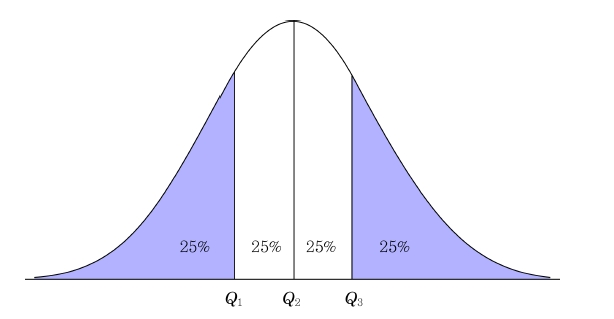
다음 자료는 A군의 우유를 생산하는 60가구의 젖소 보유 수이다. 이 자료를 이용하여 평균, 중앙값, 사분위수를 구하라.
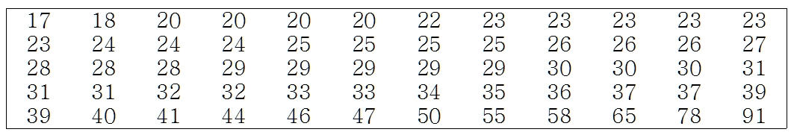
(풀이)
평균 : \(\bar{x} = \frac{17+18+\cdots +78+91}{60}=32.767\)
중앙값 : 관찰값의 수가 60(짝수)이므로 중앙값은 30번째 관찰값(29)과 31번째 관찰값(29)의 평균인 29
사분위수:
\(Q_1 = 24+0.25(24-24)=24\)
\(Q_2 = 29\)
\(Q_3 = 36+0.75(37-36)=36.75\)
2.3 산포의 측도
2.3.1 분산과 표준편차
분포에 있어서 분산은 자료의 변동(variation)의 평균이다. 여기서 변동이란 관찰값과 평균과의 차의 제곱을 말한다. 분산은 관찰값이 평균으로부터 떨어져 있는 정도를 의미한다.
만약 모집단의 관찰값이 \(x_1, \ldots, x_N\)이라면, 모분산(\(\sigma^2\); population variance)과 모표준편차(\(\sigma\); population standard deviation)는 다음과 같음
모분산과 모표준편차 모분산 : \(\sigma^2 = \frac{1}{N}\sum_{i=1}^N (x_i -\mu )^2\)
모표준편차 : \(\sigma=\sqrt{\sigma^2}\)
만약 모집단의 관찰값이 \(x_1, \ldots, x_n\)이라면, 표본분산(\(s^2\); sample variance)과 표본표준편차(\(s\); sample standard deviation)는 다음과 같음
표본분산과 표본표준편차 표본분산 : \(s^2 = \frac{1}{n-1}\sum_{i=1}^n (x_i - \bar{x} )^2\)
표본표준편차 : \(s=\sqrt{s^2}\)
분산과 표준편차는 표본평균을 중심으로 각 자료들이 얼마나 떨어져 있는가를 하나의 값으로 표시
표본분산식에서 \((x_i - \bar{x})\)를 편차라고 하며, 편차합 \(\sum_{i=1}^n (x_i - \bar{x})\)는 항상 0임
표본분산에서 사용되는 \(n-1\)은 분산의 추정에 관련된 값으로 자유도(degrees of freedom)라 함. 이는 변동을 계산하는데 이용되는 독립된 정보의 수를 의미
표본분산은 편차를 제곱한 값을 사용하기 때문에 표본분산의 단위는 자료의 단위를 제곱한 것과 같음. 따라서 자료와 같은 단위를 갖는 산포도를 나타내는 것으로 표본표준편차를 사용함
\(n\)개의 관찰값을 \(x_1, \ldots x_n\)이라 하고 표본평균을 \(\bar{x}\)라 하면, \[s^2 = \frac{1}{n-1}\sum_{i=1}^n (x_i - \bar{x} )^2 = \frac{1}{n-1}\left[ \sum_{i=1}^n x_i^2 - \frac{(\sum_{i=1}^n x_i)^2}{n}\right]\]
- 증명 \[\begin{aligned} \sum_{i=1}^n (x_i - \bar{x})^2&=\sum_{i=1}^n (x_i^2 -2\bar{x}x_i +\bar{x}^2)=\sum_{i=1}^n x_i^2 - 2\bar{x}\sum_{i=1}^n x_i +\sum_{i=1}^n \bar{x}^2\\ &=\sum_{i=1}^n x_i^2 -2n\bar{x}^2+n\bar{x}^2 =\sum_{i=1}^n x_i^2 - n\bar{x}^2=\sum_{i=1}^n x_i^2 - \frac{(\sum_{i=1}^n x_i)^2}{n}\end{aligned}\]
\(n\)개의 관찰값을 \(x_1, \ldots x_n\)이라 하고 \(c\)를 \(0\)이 아닌 상수라고 하자. - \(y_1=x_1+c, y_2=x_2+c, \ldots, y_n=x_n+c\) 이면 \(s_y^2=s_x^2\) - \(y_1=cx_1, \ldots, y_n=cx_n\) 이면 \(s_y^2=c^2s_x^2, \hskip5pt s_y=|c|s_x\)
첫 번째 정리는 상수 \(c\)가 각각의 자료에 더해진다고(혹은 빼진다고) 해도 분산에는 변화가 없다는 것을 의미. \(c\)를 더하거나 빼는 것은 자료의 위치를 이동시킬 뿐 각 자료의 값들 간의 거리는 변하지 않기 때문에 분산에는 변화가 없음
두 번째 정리는 각 \(x_i\)에 \(c\)를 곱할 경우 \(s^2\)에 \(c^2\)을 곱하는 것과 같음을 의미
2.3.2 범위와 사분위간 범위
범위 = \(x_{(n)} - x_{(1)}\)
사분위간 범위(\(IQR\)): \(IQR = Q_3 - Q_1\)
범위나 사분위간 범위는 두 관찰값의 차이만을 이용하기 때문에 많은 정보가 손실됨
범위는 특이값이 존재하는 자료의 경우 상대적으로 큰 값을 가지므로 매우 불안정한 산포도가 됨
사분위간 범위는 범위와는 달리 특이값의 존재에 영향을 받지 않음
다음 자료는 A군의 우유를 생산하는 60가구의 젖소 보유 수이다. 이 자료를 이용하여 표본분산, 표본표준편차, 범위, 사분위간 범위를 구하라.
(풀이)
평균 : \(\bar{x} = \frac{17+18+\cdots +78+91}{60}=32.767\)
표본분산 : \(s^2=\frac{\sum_{i=1}^{60} (x_i-32.767)^2}{60-1}=\frac{(17-32.767)^2+ \cdots +(91-32.767)^2}{59}=191.199\)
표본표준편차 : \(s=\sqrt{191.199}=13.827\)
범위 : \(range=x_{(n)} -x_{(1)}=91-17=74\)
사분위간 범위 : \(IQR=Q_3 - Q_1 = 36.75 -24 =12.75\)
2.3.3 변동계수
같은 평균을 갖는 여러 종류의 자료가 있을 경우 각 자료들의 표준편차를 이용하면 산포도의 비교가 용이함. 그러나 서로 다른 평균과 표준편차를 갖는 자료들의 산포도를 비교하기는 쉽지 않음
이러한 경우 평균과 표준편차를 동시에 고려한 상대적 변동을 나타내는 변동계수(coefficient of variation)를 사용하는 것이 유용함
일반적으로 표준편차를 절대산포측도, 변동계수를 상대산포측도라 함
변동계수는 측정단위와 무관하며, 측정단위나 평균이 다른 자료들 간의 비교에 유용한 측도임
표본변동계수 : \(CV = \frac{s}{\bar{x}}\times 100\%\)
다음 두 자료의 변동 계수를 구하라.
자료 1 : 30 45 30
자료 2 : 50 110 50(풀이)
자료 1 : 표본평균=35, 표본표준편차=8.66, 표본변동계수=24.74%
자료 2 : 표본평균=70, 표본표준편차=34.64, 표본변동계수=49.49%
자료 1과 자료 2는 평균이 2배나 차이가 나서 산포도를 비교하는 것이 쉽지 않으나, 변동계수를 통해 자료 2가 자료 1에 비해 상대적으로 넓게 퍼져있음을 알 수 있음
다음의 두 가지 투자 정보를 가지고 있다면 어디에 투자를 하겠는가?
기업 1 기업 2 기업 3 평균수익률 10% 14% 15% 수익률의 표준편차 7% 4% 7% (풀이)
세 기업의 평균수익률과 표준편차를 이용하여 변동계수를 계산함으로써 상대적인 투자 위험률을 알 수 있음
기업 1 기업 2 기업 3 평균수익률 10% 14% 15% 수익률의 변동계수 70.00% 28.57% 46.67% 기업 1의 변동계수가 가장 크므로 세 기업중 투자위험이 가장 크며, 평균수익률이 가장 작기때문에 투자 대상에 제외. 기업 2는 기업 3에 비해 평균수익률이 크게 작지 않고 상대적인 투자 위험률도 낮기 때문에 기업 2에 투자하는 것이 적절함
2.3.4 왜도와 첨도
왜도(skewness)란 자료의 대칭정도를 나타내는 측도로써 자료의 분포가 기울어 진 방향과 정도를 나타냄. 즉, 분포가 좌우 대칭인가 아니면 한쪽으로 얼마나 치우쳐 졌는가를 나타냄
첨도(kurtosis)는 자료의 중앙 집중도를 나타냄. 즉, 분포의 뾰족한 정도와 꼬리부분의 두터운 정도를 나타내는 척도임. 자료가 중앙에 많이 모여 있으면 분포는 뾰족해 지고, 자료가 퍼져 있으면 분포가 평평해 짐
표본왜도계수 : \(S_k = \frac{\frac{1}{n}\sum_{i=1}^n (x_i-\bar{x})^3}{s^3}\)
표본첨도계수 : \(K_u = \frac{\frac{1}{n}\sum_{i=1}^n (x_i-\bar{x})^4}{s^4}-3\)
좌우대칭인 분포이면 왜도는 0
오른쪽으로 긴 꼬리를 가진 분포이면 왜도는 0보다 크며, 왼쪽으로 긴 꼬리를 가진 분포이면 왜도는 0보다 작음
첨도계수가 양이면 정규분포의 밀도함수보다 중앙에 밀도가 더 높음을 의미. 즉, 분포의 중심이 정규분포보다 높고, 꼬리부분이 얇고 짧음
첨도계수가 음이면 정규분포보다 중심이 낮고 꼬리부분이 두터움
왜도와 첨도
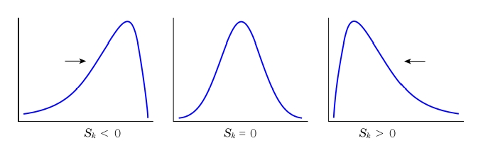
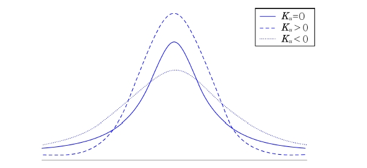
다음 자료는 A군의 우유를 생산하는 60가구의 젖소 보유 수이다. 이 자료를 이용하여 표본변동계수, 왜도, 첨도를 구하라.
(풀이)
표본변동계수 : \(CV=\frac{s}{\bar{x}}\times 100\%=\frac{13.827}{32.767}\times 100\%=42.20\%\)
왜도 : \(S_k = \frac{\frac{1}{60}\sum_{i=1}^{60} (x_i-32.767)^3}{13.827^3}=2.118\)
첨도 : \(K_u = \frac{\frac{1}{60}\sum_{i=1}^{60} (x_i-32.767)^4}{13.827^4}=8.174\)
2.4 자료의 시각적 해석
2.4.1 도수분포표
이산형 자료의 경우, 변수가 취할 수 있는 각 관찰값이 나타내는 빈도를 도수(frequency)라고 하며, 이 도수를 전체 자료의 수 \(n\)으로 나눈 것을 상대도수(relative frequency)라 함
연속형 자료의 경우, 관찰값들이 정확하게 같은 값이 존재하지 않기 때문에 적절한 계급(class)으로 나누어 이산형 자료처럼 간주하여 도수 및 상대도수를 구함
실제 관찰값에 대한 관찰값이나 규칙에 의해 나눈 계급구간, 도수 및 상대도수를 표현한 표를 도수분포표(frequency table)라 함
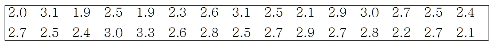
스터지의 규칙(Sturges’ law)에 따라 선택된 계급의 수는 \(k \ge log_2n\)를 만족해야 함. 여기서 \(k\)는 계급의 수이고 \(n\)은 관찰값들의 총 수를 나타냄
표 2-1의 자료에서 \(n=30\)이므로 \(log_230=4.9\). 따라서 계급의 수는 5개 이상이어야 함
계급구간의 길이는 동일한 크기로 설정하는 것이 좋음
표 2-1 자료의 범위는 (3.3-1.9)=1.4이므로 계급구간의 길이는 (1.4/5)=0.28로 쉽게 선택이 가능하며, 여기서는 0.3으로 사용함
통계학과 신입생 30명의 학점에 대한 도수분포표
계급 계급구간 도수 상대도수 1 1.85-2.15 5 0.167 2 2.15-2.45 4 0.133 3 2.45-2.75 12 0.400 4 2.75-3.05 6 0.200 5 3.05-3.35 3 0.100
2.4.2 히스토그램
관찰값들을 동일한 구간에 대한 도수분포표로 만든 경우에는 각 구간에 대한 히스토그램을 그릴 수 있음
히스토그램은 각 구간의 상대도수를 구간의 길이로 나눈 값을 기둥의 높이로 하거나 도수 혹은 상대도수를 직접 기둥의 높이로 표현
상대도수를 구간의 길이로 나눈 값을 밀도라 하고 상대도수의 합은 1이므로 히스토그램에서 기둥면적의 합은 1이 됨
히스토그램의 목적은 자료의 분포에 대한 정보를 시각적으로 빠르게 보여주는 것임
도수를 직접 기둥의 높이로 하는 그래프를 도수 히스토그램(frequency histogram)이라고 하고 상대도수를 기둥의 높이로 하는 그래프를 상대도수 히스토그램(relative frequency histogram)이라고 함
통계학과 신입생의 학점에 대한 상대도수 히스토그램
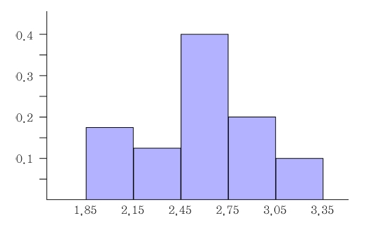
2.4.3 줄기-잎 그림
줄기-잎 그림(stem-leaf plot)은 자료를 재배열할 필요 없이 줄기 부분과 잎 부분을 구분하여 시각적으로 표현하는 방법
관찰값의 자리 수 중 적당한 부분을 줄기로 선택한 후, 줄기로 사용한 관찰값의 나머지 자리를 잎으로 정의하여 적어 나가는 방법
줄기-잎 그림은 히스토그램처럼 자료를 시각적으로 볼 수 있게 표현할 수 있을 뿐만 아니라 각 자료의 실제 관찰된 값을 유지하기 때문에 표와 그림의 장점을 모두 가짐
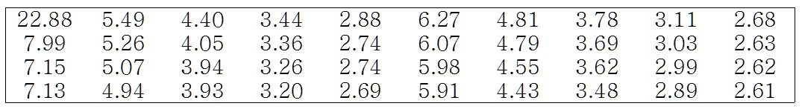
줄기-잎 그림으로 표현하기 위해 줄기와 잎 두 부분으로 관찰값을 나누어야 함
첫 번째 방법으로 소수점을 기준으로 관찰값들을 나눌 수 있음. 소수점을 기준으로 왼편은 줄기 부분이 되고 오른 편은 잎 부분이 됨
두 번째 방법은 소수점 첫째자리와 둘째자리를 기준으로 나눌 수 있음
관찰값 7.15에 대한 줄기-잎 그림을 표현하는 방법
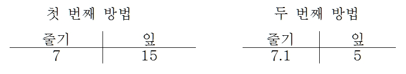
줄기와 잎의 선택은 자료의 특성에 의존하여 나눌 수 있음
줄기-잎 그림 작성요령
열에 순서대로 줄기 값을 나열한다.
줄기의 값 오른쪽에 수직선을 긋는다
각 관찰값에 대해 적절한 줄기에 대응하는 행에 관찰값들의 잎 부분을 기록한다.
각 줄기의 행의 가장 작은 값 부터 큰 값 까지 잎을 배열한다.
만약 각 줄기의 잎의 수가 너무 크다면 줄기를 두 부분으로 나눈다.
40개 정육점의 하루 쇠고기 판매량 자료의 줄기-잎 그림
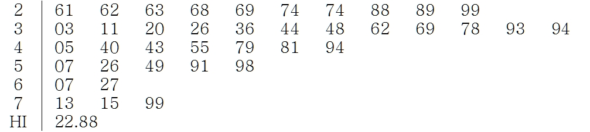
줄기-잎 그림은 히스토그램의 특징을 지니면서 실제 관찰값을 확인 할 수 있다는 장점이 있음
줄기-잎 그림은 도표를 한 눈에 볼 수 있게 적절한 줄기 개수를 결정하는 것이 중요함
2.4.4 상자 그림
상자 그림(box plot)은 5가지 요약 통계량을 이용하여 표현
5가지 요약 통계량은 최소값, 제1사분위수, 중앙값, 제3사분위수, 최대값을 의미
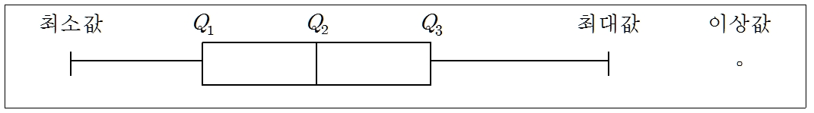
먼저 제1사분위수와 제3사분위수를 이용하여 상자를 만듦. 이 때 상자의 길이는 사분위간 범위(\(IQR\))가 되고 상자 가운데 중앙값을 선(수염; whisker)으로 나누어 표시
상자 양 끝에서 선으로 최소값과 최대값까지 표시하여 중앙의 상자를 완성. 이때 최소값과 최대값은 특이값(이상값)을 제외하여 구함. 특이값은 사분위간 범위의 1.5배를 제1사분위수(\(Q_1\))에서 뺀 값과 제3사분위수(\(Q_3\))에서 더한 값의 범위(울타리; fence)에 포함되지 않는 관찰값을 의미함
40개 정육점의 하루 쇠고기 판매량 자료의 상자 그림
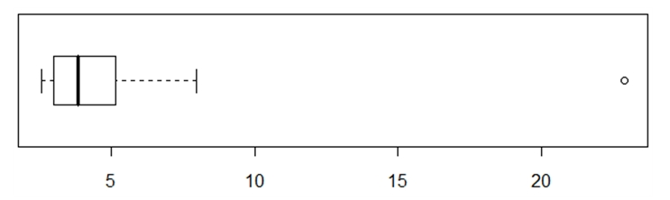
40개 정육점의 하루 쇠고기 판매량 자료의 \(Q_1=3.00\), 중앙값은 3.86, \(Q_3=5.21\). \(IQR=5.21-3=2.21\)이므로 위 울타리는 \(3.21+1.5\times 2.21=8.53\)이고 아래 울타리는 \(3.00-1.5\times 2.21=-0.315\)가 됨
울타리 안에 포함되지 않는 관찰값 22.88은 특이값으로 판정되며 최소값은 2.61 최대값은 7.99임